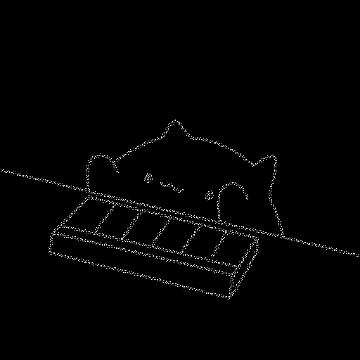

<!DOCTYPE html>
<html>
  <meta charset="utf-8" />
  <title>homepage</title>
  <link
    href="https://cdn.jsdelivr.net/npm/bootstrap@5.1.2/dist/css/bootstrap.min.css"
    rel="stylesheet"
    integrity="sha384-uWxY/CJNBR+1zjPWmfnSnVxwRheevXITnMqoEIeG1LJrdI0GlVs/9cVSyPYXdcSF"
    crossorigin="anonymous"
  />
  <link rel="stylesheet" href="./static/css/main.css" />
</html>

<body>
  <div class="container">
    <div class="row">
      <div class="col col-lg-7">
        <h1>
          <a href="index.html" style="text-decoration: none"
            >Visual Cryptography</a
          >
        </h1>
        <div class="long-content">
          <p>
            One of the best-known techniques has been credited to Moni Naor and
            Adi Shamir, who developed it in 1994. They demonstrated a visual
            secret sharing scheme, where an image was broken up into n shares so
            that only someone with all n shares could decrypt the image, while
            any n − 1 shares revealed no information about the original image.
            Each share was printed on a separate transparency, and decryption
            was performed by overlaying the shares. When all n shares were
            overlaid, the original image would appear. There are several
            generalizations of the basic scheme including k-out-of-n visual
            cryptography, and using opaque sheets but illuminating them by
            multiple sets of identical illumination patterns under the recording
            of only one single-pixel detector.
          </p>
          <p>
            Using a similar idea, transparencies can be used to implement a
            one-time pad encryption, where one transparency is a shared random
            pad, and another transparency acts as the ciphertext. Normally,
            there is an expansion of space requirement in visual cryptography.
            But if one of the two shares is structured recursively, the
            efficiency of visual cryptography can be increased to 100%.
          </p>
          <p>
            Some antecedents of visual cryptography are in patents from the
            1960s. Other antecedents are in the work on perception and secure
            communication.
          </p>
          <p>
            Visual cryptography can be used to protect biometric templates in
            which decryption does not require any complex computations.
          </p>
        </div>
      </div>
      <div class="col-md-auto">
        <a href="index.html"></a>
      </div>
    </div>
  </div>
</body>
